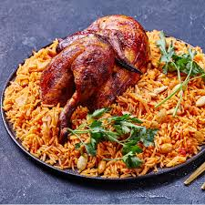

Kabsa

Description
Kabsa is the national dish of Saudi Arabia. It is a dish made of rice and meat, cooked either separately or together. It can be made with spices and camel meat, lamb, chicken or fish.
It is usually eaten for lunch and sometimes for dinner. Kabsa is often a dish for a group of people. The kabsa is normally served on a round metal dish placed on the floor and people eat with their right hand, although a spoon may be used in countries such as Kuwait, Bahrain and other Gulf countries.
Ingredients
- One fourth cup butter
- 1 onion, finely chopped
- 6 cloves garlic, minced
- 1 (3 pound) whole chicken, cut into 8 pieces
- 1 pinch ground cumin
- Salt and freshly ground black pepper to taste
- Three fourth cups hot water, plus more if needed
- 1 cube chicken bouillon
- Two Fourth cups unrinsed basmati rice
- One fourth cup raisins
Steps
- Make spice mix: Stir together saffron, cinnamon, allspice, lime powder, cardamom, and white pepper in a small bowl; set aside.
- Make dish: Melt butter in a large stockpot or Dutch oven over medium heat. Cook and stir onion and garlic in butter until onion has softened and turned translucent, about 5 minutes. Add chicken and cook over medium-high heat, stirring occasionally, until lightly browned, about 10 minutes. Mix in tomato purée.
- Stir in canned tomatoes with juice, carrots, cloves, nutmeg, cumin, coriander, salt, black pepper, and reserved spice mix. Cook for about 3 minutes; pour in water and add chicken bouillon cube.
- Bring sauce to a boil, then reduce heat, and cover the pot. Simmer until chicken is no longer pink and the juices run clear, about 30 minutes.
- Gently stir in rice. Cover the pot and simmer until rice is tender and almost dry, about 25 minutes; add raisins and a little more hot water, if necessary. Cover and cook until rice grains separate, 5 to 10 minutes.
- Transfer rice to a large serving platter and arrange chicken on top. Sprinkle with toasted slivered almonds.